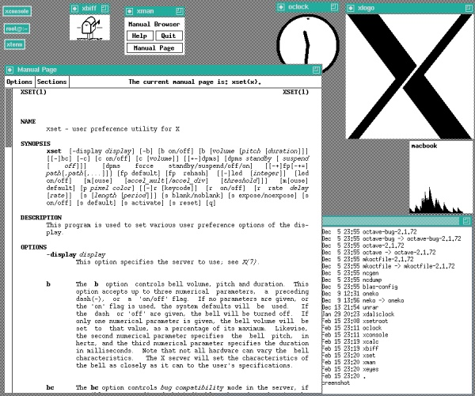
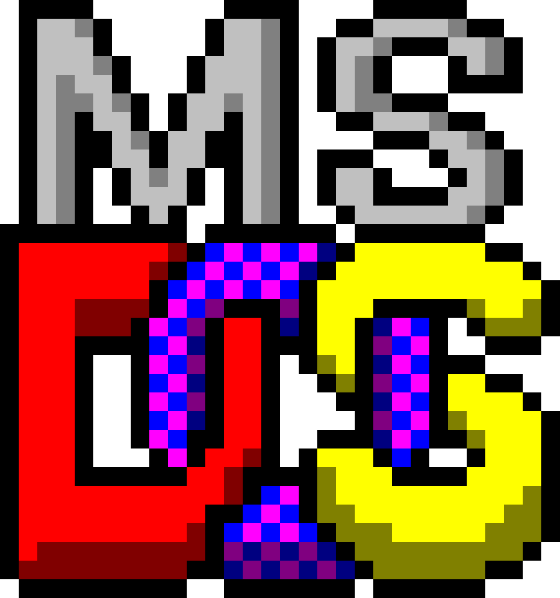
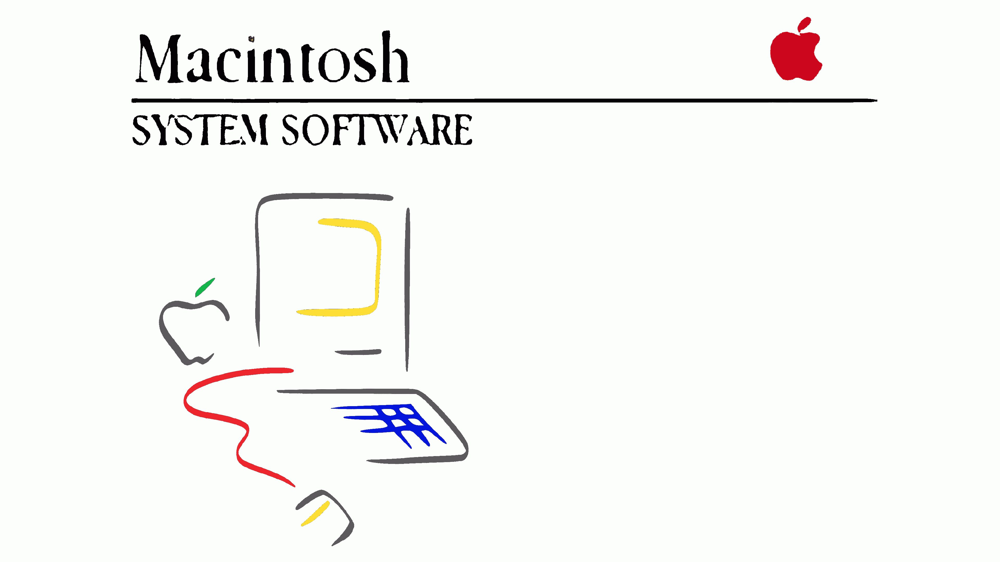
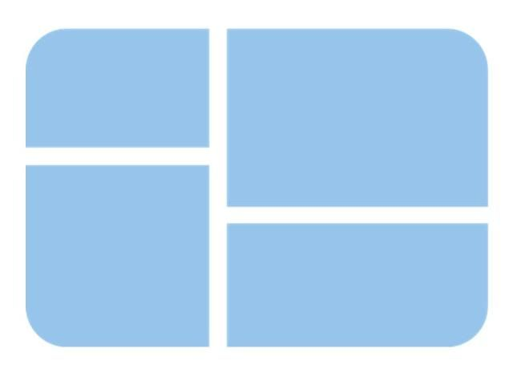

Funciones generales: Evolución histórica y versiones.
Evolución histórica de los sistemas operativos
La historia de los sistemas operativos comenzó a desarrollarse a partir de la década de 1940, justo después de la Segunda Guerra Mundial. En ese tiempo, no existía aún la idea de un sistema operativo. Los programadores trabajaban directamente con el hardware de los ordenadores, utilizando únicamente código binario, compuesto por secuencias de 0s y 1s.
Fue durante los años 50 cuando surgió el primer concepto de sistema operativo. En 1956, se creó un software muy básico para el ordenador IBM 704, cuya función principal era iniciar la ejecución de un programa una vez que otro finalizaba.
La década de 1960 trajo consigo avances significativos en este mismo año comenzaron a implementarse nuevas ideas como la multitarea (varias tareas al mismo tiempo), el soporte para múltiples usuarios, sistemas con varios procesadores y sistemas operativos en tiempo real. Uno de los desarrollos más importantes de esta época fue UNIX, un sistema que serviría como base para muchos otros sistemas operativos actuales.

Durante los años 70, los ordenadores personales comenzaron a expandirse entre el público general. Este cambio impulsó el desarrollo de software más accesible, y fue entonces cuando se creó el lenguaje de programación C, diseñado para reescribir el sistema UNIX y mejorar su eficiencia.
Con el crecimiento del número de usuarios en los años 80, la atención se centró en hacer los sistemas operativos más amigables. Así nacieron las primeras interfaces gráficas de usuario, facilitando el uso de las computadoras. En esta etapa aparecieron sistemas como MS-DOS, MacOS y Windows.
  
Finalmente, en los años 90 se dio a conocer Linux. La primera versión de su núcleo fue publicada en 1991, y más adelante se integró con el proyecto GNU. De esta fusión nació GNU/Linux, un sistema operativo libre y basado en UNIX, que actualmente muchos conocen simplemente como "Linux".
(Historia de la informática, s/f)